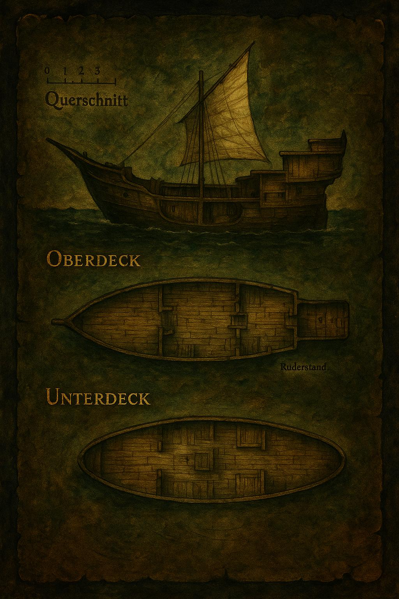

Ein ehrwürdiger Byrdinger – bereit für neue Abenteuer.
Wie man mit fachmännischem Blick feststellt, handelt es sich bei dem Schiff um einen Byrdinger – ein Handelsschiff nach thorwalscher Bauart. Die verwendeten Hölzer deuten jedoch darauf hin, dass es nicht direkt in Thorwal gebaut wurde.

Technische Daten:
Strukturpunkte: 400
Länge (Oberdeck mit Aufbauten): 22,8 Schritt
Breite (an breitester Stelle): 5,5 Schritt
Tiefgang: 1,5 – 2 Schritt, je nach Ladung
Besatzung: 15 (normal), 4 (Minimum für Segelbetrieb)
Typische Merkmale eines Byrdingers:
Einmastig mit Rahsegel, geklinkerte Holzplanken, robust gebaut. Eignet sich sowohl für Handelsreisen als auch für schnelle Überfälle entlang der Küste. Der geringe Tiefgang erlaubt das Befahren flacher Gewässer wie Flüsse und Buchten.
Die Myrianische Falke wartet nur darauf, erneut in See zu stechen – um mit ihr das nächste Kapitel unserer Geschichte forzusetzen.